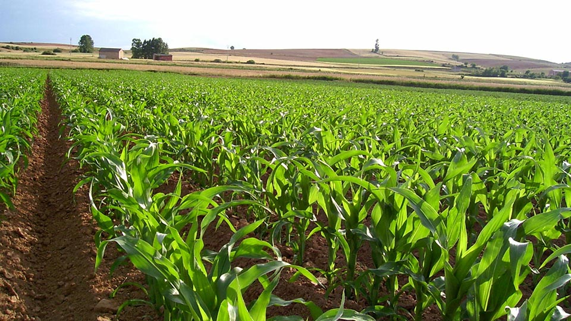

Bienvenidos al Sistema Operacional del Maíz
Esta aplicación permite hacer un seguimiento cronológico de las principales actividades del ciclo del maíz en los llanos de El Socorro, Estado Guárico.

Esta aplicación permite hacer un seguimiento cronológico de las principales actividades del ciclo del maíz en los llanos de El Socorro, Estado Guárico.
